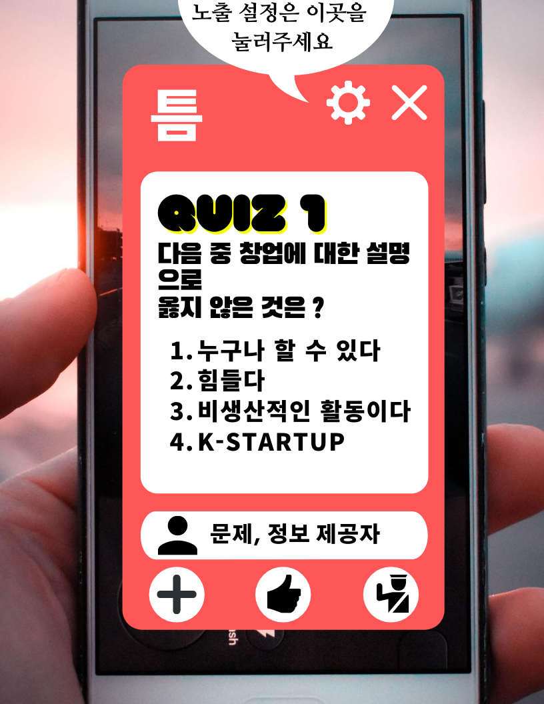
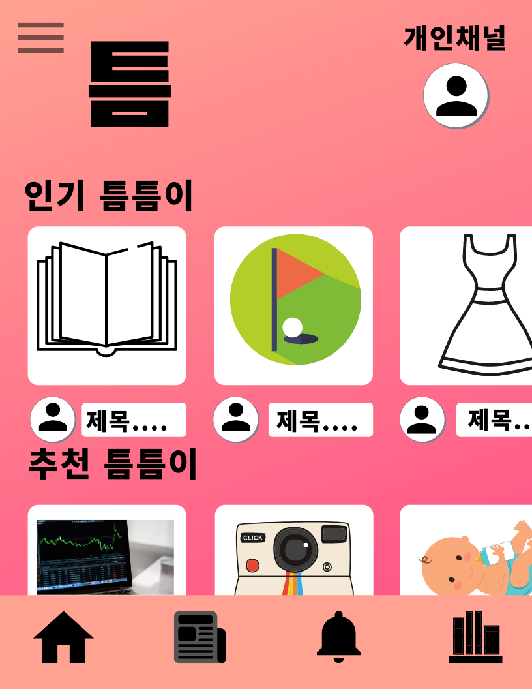
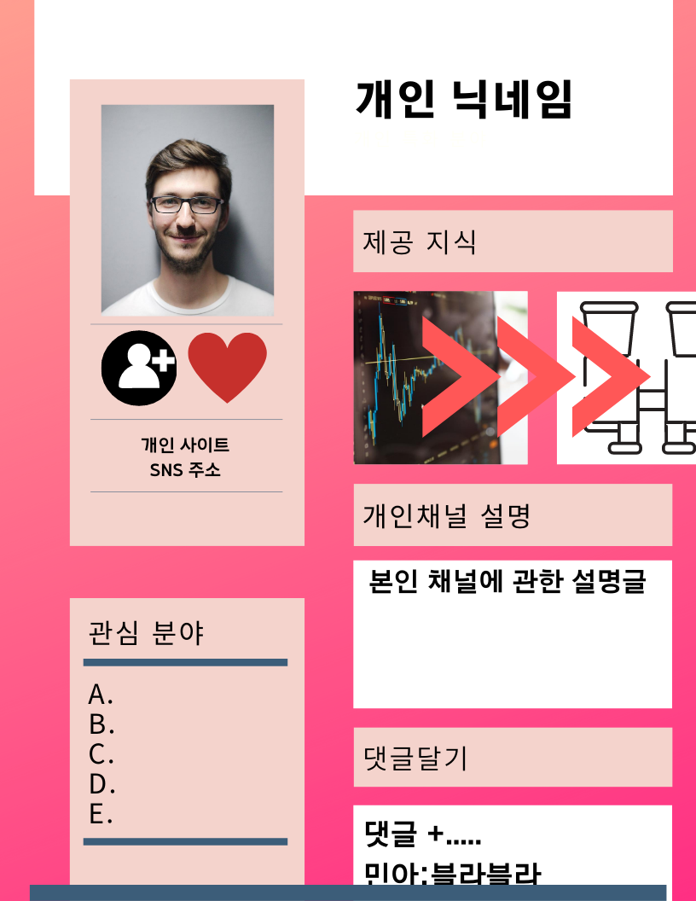

:"틈" 이라는 서비스는 팝업형의 정보,지식 컨텐츠 공유 플랫폼 서비스입니다.

누구든지"틈"이라는 플랫폼 안에서 자신만의 지식, 아이디어를 손쉽게 컨텐츠화하여 플랫폼에서 공유하고 제공 받을 수 있습니다.
 그리고 이러한 컨텐츠들은 짧은시간에 습득가능한 정보들로 사용자의 기호에 맞게 노출빈도를 설정하여 제공받을 수 있습니다. (일정 시간마다, 특정 어플 클릭시, 잠금해제시 등등) 본인의 채널을 만들어 그곳에서 자신만의 지식, 아이디어를 공유하고 팔로워들을 만들어가며커리어를 쌓을 수 있습니다.당신이 학생이든, 직장인이든 어떤일을 하던간에 당신은 당신만의 꿀팁, 정보들을 가지고 있을 것입니다. 그것들을 당신의 채널에서 컨텐츠화하여 공유해보세요. 다른 플랫폼에 비해 매우 쉽고 빠르게 공유할 수 있을 것입니다. 꾸준히 정보를 공유하고 가치를 나누다보면 당신의 팔로워는 늘어나고 당신의 든든한 부수입원이 되어있을뿐만 아니라 당신의 훌륭한 커리어이자 포트폴리오가 되어있을 것입니다.
지금 바로 앱을 설치하여 가치를 공유해보세요